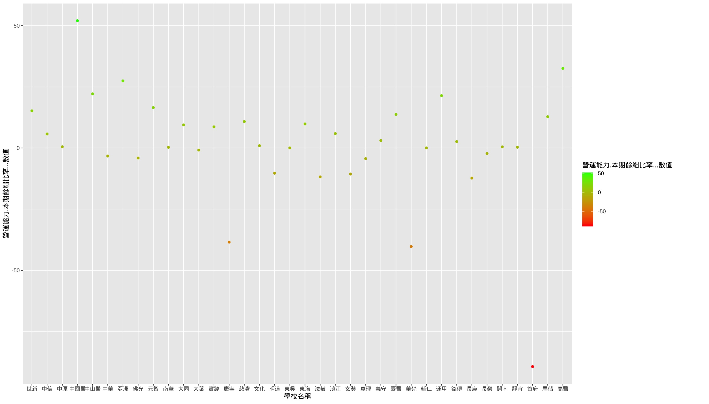
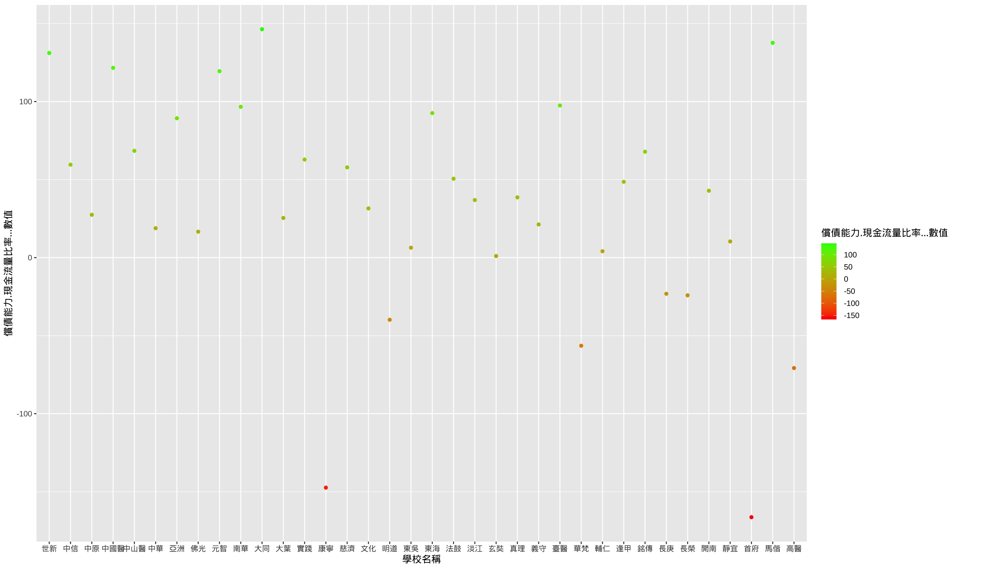
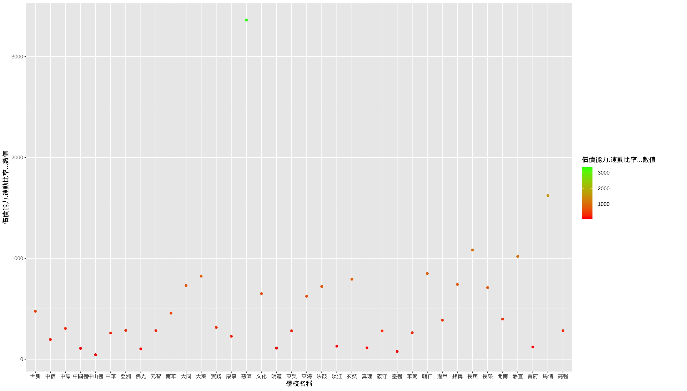

資料集
1-1公立學校新生住宿人數
以前5志願來看僅政大位居中段班，其餘皆位居倒數10名，「中字輩」大學的住宿人數也在後段班。顯見就讀前段、中段的公立大學，可能須考量校外住宿費用較高的問題。
1-2私立學校新生住宿人數
新生住宿率低於90%的13所私立大學中，位於雙北的學校就佔了6所，甚至倒數4名東吳、輔仁、世新、淡江大學皆位於雙北。若想就讀位在雙北的私立學校，需要提早考量校外住宿的問題。
2-1公立學校新生註冊率
僅有3間學校的註冊率在90%以下。前5志願的排名有明顯位居前段，但志願高低和註冊率之間並沒有明顯區別。而註冊率較高的學校大多位於六都，倒數的學校則地處較為偏僻。因此較著重同儕關係的高中生，可能需要注意學校所在的地區。
2-2私立學校新生註冊率
34所私立大學中有15所大學註冊率在90%以下，大葉大學、華梵大學低於80%，中華大學、法鼓山文理學院跌破70%，明道大學甚至僅有52.15%。
3-1公立學校就學穩定率
就學穩定率的差異也並不明顯，僅2所學校在90%以下。學校地理位置的因素仍然有明顯效果，且前5志願的名次更加靠前。
3-2私立學校就學穩定率
私立大學就學穩定率與公立大學差異甚大，50%的私立大學就學穩定率在90%以下，其中玄奘大學、華梵大學低於80%，法鼓山文理學院僅66.67%。
4-1公立學校國際交換
4-2私立學校國際交換
5私校財務狀況燈號




